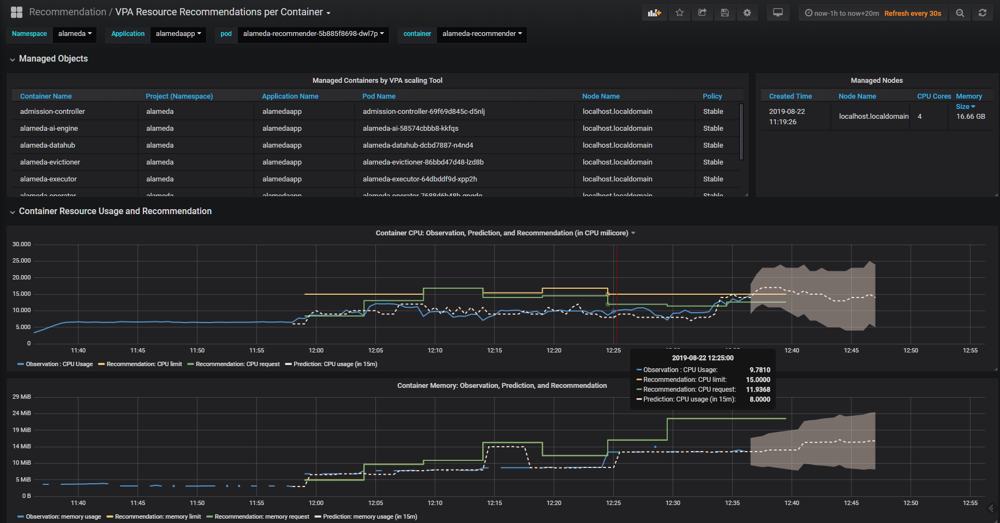

Objective
- Install Federator.ai v4.2
- Create an Alamedascaler to watch an application
Requirement
- Kubernetes 1.11+
- Prometheus
Checkout the document of required metrics at required metrics for Alameda
Reference
Install
- Checkout the latest tag number of v4.2. Assuming
v4.2.159. Execute the following command and follow the interactive prompts to input settings.
# curl https://raw.githubusercontent.com/containers-ai/federatorai-operator/4.2/deploy/install.sh |sh -s v4.2.159
Please input Federator.ai Operator tag: v4.2.159
Is tag "v4.2.159" correct? [default: y]:
Downloading file 00-namespace.yaml ...
Done
Downloading file 01-serviceaccount.yaml ...
Done
Downloading file 02-alamedaservice.crd.yaml ...
Done
Downloading file 03-federatorai-operator.deployment.yaml ...
Done
Downloading file 04-clusterrole.yaml ...
Done
Downloading file 05-clusterrolebinding.yaml ...
Done
Downloading file 06-role.yaml ...
Done
Downloading file 07-rolebinding.yaml ...
Done
Starting apply Federator.ai operator yaml files
namespace/federatorai created
serviceaccount/federatorai-operator created
customresourcedefinition.apiextensions.k8s.io/alamedaservices.federatorai.containers.ai created
deployment.apps/federatorai-operator created
clusterrole.rbac.authorization.k8s.io/federatorai-operator created
clusterrolebinding.rbac.authorization.k8s.io/federatorai-operator created
role.rbac.authorization.k8s.io/federatorai-operator created
rolebinding.rbac.authorization.k8s.io/federatorai-operator created
Processing...
Waiting for federatorai pods to be ready...
All federatorai pods are ready.
Install Federator.ai operator v4.2.159 successfully
Downloading alamedaservice and alamedascaler sample files ...
Done
========================================
Do you want to launch interactive installation of Federator.ai [default: y]:
Enter the namespace you want to install Federator.ai [default: alameda]:
Do you want to enable execution? [default: y]: :
Enter the prometheus service address
[default: https://prometheus-k8s.openshift-monitoring:9091]: http://prometheus-prometheus-oper-prometheus.monitoring:9090
Which storage type you would like to use? ephemeral or persistent?
[default: ephemeral]:
----------------------------------------
install_namespace = alameda
enable_execution = true
prometheus_address = http://prometheus-prometheus-oper-prometheus.monitoring:9090
storage_type = ephemeral
----------------------------------------
Is the above information correct [default: y]:
Processing...
Waiting for alameda pods to be ready...
Waiting for alameda pods to be ready...
Waiting for alameda pods to be ready...
Waiting for alameda pods to be ready...
Waiting for alameda pods to be ready...
Waiting for alameda pods to be ready...
Waiting for alameda pods to be ready...
Waiting for alameda pods to be ready...
Waiting for alameda pods to be ready...
Waiting for alameda pods to be ready...
All alameda pods are ready.
Install Alameda v4.2.159 successfully
Downloaded YAML files are located under /tmp/install-op
- Check if we have all the pods of federator.ai running by:
[root@localhost ~]# kubectl get pods --all-namespaces
NAMESPACE NAME READY STATUS RESTARTS AGE
alameda admission-controller-69f69d845c-d5nlj 1/1 Running 0 13m
alameda alameda-ai-58574cbbb8-kkfqs 1/1 Running 0 17m
alameda alameda-datahub-dcbd7887-n4nd4 1/1 Running 0 17m
alameda alameda-evictioner-86bbd47d48-lzd8b 1/1 Running 0 17m
alameda alameda-executor-64dbddf9d-xpp2h 1/1 Running 0 17m
alameda alameda-grafana-56cb58699b-z7k2z 1/1 Running 0 17m
alameda alameda-influxdb-777488c846-j6mpq 1/1 Running 0 17m
alameda alameda-operator-7688d6b48b-gngdq 1/1 Running 0 14m
alameda alameda-recommender-5b885f8698-dwl7p 1/1 Running 0 17m
federatorai federatorai-operator-5d985d98bc-44qq6 1/1 Running 0 20m
kube-system coredns-5c98db65d4-t87r4 1/1 Running 0 27m
kube-system coredns-5c98db65d4-whx4k 1/1 Running 0 27m
kube-system etcd-localhost.localdomain 1/1 Running 0 26m
kube-system kube-apiserver-localhost.localdomain 1/1 Running 0 26m
kube-system kube-controller-manager-localhost.localdomain 1/1 Running 3 26m
kube-system kube-flannel-ds-amd64-hqxxd 1/1 Running 0 27m
kube-system kube-proxy-zl4md 1/1 Running 0 27m
kube-system kube-scheduler-localhost.localdomain 1/1 Running 3 27m
kube-system tiller-deploy-58565b5464-mcg89 1/1 Running 0 25m
monitoring alertmanager-prometheus-prometheus-oper-alertmanager-0 2/2 Running 0 23m
monitoring prometheus-grafana-7bd5f968b5-742zt 2/2 Running 0 23m
monitoring prometheus-kube-state-metrics-5f7884cf-bczrg 1/1 Running 0 23m
monitoring prometheus-prometheus-node-exporter-k8n7b 1/1 Running 0 23m
monitoring prometheus-prometheus-oper-operator-6ff596b864-tjd74 1/1 Running 0 23m
monitoring prometheus-prometheus-prometheus-oper-prometheus-0 3/3 Running 0 23m
It should have the 10 pods in alameda namespace and the pod in federatorai namespace.
Create an AlamedaScaler
- Create a yaml file
alamedascaler.yamlwith the following content.
apiVersion: autoscaling.containers.ai/v1alpha1
kind: AlamedaScaler
metadata:
name: alamedaapp
namespace: alameda
spec:
policy: stable
enableExecution: false
scalingTool:
type: vpa
selector:
matchLabels:
app: alameda
- Apply file
alamedascaler.yamlwith kubectl command.
# kubectl apply -f alamedascaler.yaml
- Checkout what resource objects are being watched by Alameda
The resource objects listed under status key are what being watched.
# kubectl get alamedascaler -n alameda -o yaml
apiVersion: v1
items:
- apiVersion: autoscaling.containers.ai/v1alpha1
kind: AlamedaScaler
metadata:
creationTimestamp: "2019-08-22T03:56:45Z"
generation: 2
name: alamedaapp
namespace: alameda
resourceVersion: "4088"
selfLink: /apis/autoscaling.containers.ai/v1alpha1/namespaces/alameda/alamedascalers/alamedaapp
uid: d55d76fa-5872-4099-99ea-6847a5b32692
spec:
enableExecution: false
policy: stable
scalingTool:
executionStrategy:
maxUnavailable: 25%
triggerThreshold:
cpu: 10%
memory: 10%
type: vpa
selector:
matchLabels:
app: alameda
status:
alamedaController:
deployments:
alameda/admission-controller:
name: admission-controller
namespace: alameda
pods:
alameda/admission-controller-69f69d845c-d5nlj:
containers:
- name: admission-controller
resources: {}
name: admission-controller-69f69d845c-d5nlj
namespace: alameda
uid: abb80d4f-b52f-467a-9176-431bce560460
specReplicas: 1
uid: d8b7d42e-abc5-4033-96cc-f3446057c49f
alameda/alameda-ai:
name: alameda-ai
namespace: alameda
pods:
alameda/alameda-ai-58574cbbb8-kkfqs:
containers:
- name: alameda-ai-engine
resources: {}
name: alameda-ai-58574cbbb8-kkfqs
namespace: alameda
uid: 2912ae24-d3de-493d-95b2-849cbf5500a7
specReplicas: 1
uid: d33ab874-6aef-4d62-8eb9-72771ec65fd6
alameda/alameda-datahub:
name: alameda-datahub
namespace: alameda
pods:
alameda/alameda-datahub-dcbd7887-n4nd4:
containers:
- name: alameda-datahub
resources: {}
name: alameda-datahub-dcbd7887-n4nd4
namespace: alameda
uid: 674fdcc6-6222-48f1-b6de-ebd57ce39e61
specReplicas: 1
uid: cea14d4e-e84a-4ad8-9708-7f622fc66f13
alameda/alameda-evictioner:
name: alameda-evictioner
namespace: alameda
pods:
alameda/alameda-evictioner-86bbd47d48-lzd8b:
containers:
- name: alameda-evictioner
resources: {}
name: alameda-evictioner-86bbd47d48-lzd8b
namespace: alameda
uid: add80856-7702-41de-ae6d-3c43d1cb71d9
specReplicas: 1
uid: 813e47b3-7a47-4fed-afc0-7c4648e6218e
alameda/alameda-executor:
name: alameda-executor
namespace: alameda
pods:
alameda/alameda-executor-64dbddf9d-xpp2h:
containers:
- name: alameda-executor
resources: {}
name: alameda-executor-64dbddf9d-xpp2h
namespace: alameda
uid: beb80163-d746-4a17-aca8-e59e643ce692
specReplicas: 1
uid: f604dde3-e569-47ac-95b2-a2c9063c9eb0
alameda/alameda-grafana:
name: alameda-grafana
namespace: alameda
pods:
alameda/alameda-grafana-56cb58699b-z7k2z:
containers:
- name: grafana
resources: {}
name: alameda-grafana-56cb58699b-z7k2z
namespace: alameda
uid: e772c10d-36cc-4288-a934-1d978cf05235
specReplicas: 1
uid: da29e058-2d5a-4b62-a5f6-765b51fa876c
alameda/alameda-influxdb:
name: alameda-influxdb
namespace: alameda
pods:
alameda/alameda-influxdb-777488c846-j6mpq:
containers:
- name: influxdb
resources: {}
name: alameda-influxdb-777488c846-j6mpq
namespace: alameda
uid: 07b1fa38-1121-4203-95b6-7ffc79c25058
specReplicas: 1
uid: 1299fcb9-8e05-4387-b9c5-d7a4f778348b
alameda/alameda-operator:
name: alameda-operator
namespace: alameda
pods:
alameda/alameda-operator-7688d6b48b-gngdq:
containers:
- name: alameda-operator
resources: {}
name: alameda-operator-7688d6b48b-gngdq
namespace: alameda
uid: 2976e584-1c14-4f40-8a21-877994a84d11
specReplicas: 1
uid: e0c451a2-7533-4e89-a47f-25c63ba10786
alameda/alameda-recommender:
name: alameda-recommender
namespace: alameda
pods:
alameda/alameda-recommender-5b885f8698-dwl7p:
containers:
- name: alameda-recommender
resources: {}
name: alameda-recommender-5b885f8698-dwl7p
namespace: alameda
uid: 30497675-e450-4e53-ae08-08779bad393e
specReplicas: 1
uid: 1a08f87c-142c-4cf0-97ce-8831dc7ad46a
kind: List
metadata:
resourceVersion: ""
selfLink: ""
- Checkout the Alameda Grafana dashboard
# kubectl patch service alameda-grafana -n alameda --patch '{"spec": {"type": "NodePort"}}'
# port=`kubectl get service alameda-grafana -n alameda -o=jsonpath='{.spec.ports[*].nodePort}'`
# echo $port
Open a browser to enter an URL with your machine’s IP and $port. Checkout VPA Resource Recommendations per Container dashboard should show the alameda application.
